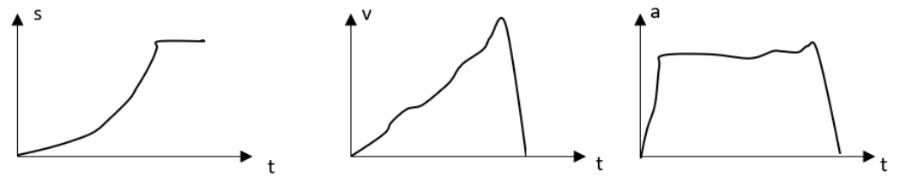

Context: Students have learned about free body diagrams and Newton’s 2nd law.
A group of students is working on a question about a block sliding down a frictionless inclined plane.
They are required to draw a force diagram to explain why the block slides down.
You approach that group, notice their force diagram as shown below, and have a conversation with one of them

She wants to check whether the students understand the
relationship between s-t, v-t, and a-t graphs. Below is the
conversation she has with them
You: So why does the block slide down?
Student: It slides down because we have a x component of the normal force acting on it, so that’s why it slides down.
You: What do you mean by x component of the normal force?
Student: Force is a vector, so when there is a force, there should be x and y components.
You: So what is the x component of the normal force?
Student: With respect to the table surface, y is perpendicular, and x is parallel.
You: OK, then which component or which force determines if this block moves or not?
Student: The x component of the normal force. The y component cancels out with gravity.
a) What can you conclude from the information provided about the student’s physics content knowledge,
both the strengths (i.e., what he/she knows) and difficulties (i.e., what he/she does not know)?
Answer with “n/a” if you think there are no strengths OR difficulties in students’ understanding
b) How would you respond to the students? Please use direct quote of what you would say.
What is(are) your purpose(s) behind that response?
Sample LAs’ answers
LA-1
a. Is this student answer correct? Why?
The student is not exactly wrong since they are able to identify what
axis the force causing the object to move occurs on as being the x axis.
The issue is that the student is relating it to force normal instead
of the force of gravity which actually has components.
b. What can you conclude from the information provided about the student’s
physics content knowledge, both the strengths (i.e. what he/she knows)
and difficulties (i.e. what he/she does not know)?
From this I understand that the student is aware of how to break
their forces into components based on an axis they define. The possible problem
that the student might be facing is that they are using an axis whose y axis
is perpendicular to the earth (the default axis) instead of one that is oriented
along the ramp. Another thing that I would need to address is the importance of
understanding that force is a vector and the direction it points is important
to the direction that the object moved.
c. How would you respond to the student? Please use direct quote
of what you would say. What is(are) your purpose(s) behind that response?
“Can you draw the axis that you are using the solve the situation?” – to identify
how they’re forces are aligned “Is it easier to draw an axis with the x-axis parallel
to the earth or parallel to the surface we are travelling on?” – to highlight importance
of choosing an axis that makes it easy to understand the situation “Can you draw and
label the component of the normal force that causes the object to slide down” – to start
a discussion on how the direction of the component they are about to draw either is in reference to
the force of gravity or that it does not point in a direction parallel to the surface
we are travelling on. This would allow for us to talk about distinctions between 1D and 2D situations.
LA-2
a. Is this student answer correct? Why?
This student’s answer is not correct. Although their reasoning is almost correct,
they are mistaking the normal force with the gravity force. The y component of gravity
force cancels out with the normal force, which is both perpendicular to the ramp but in opposite
directions; this cancellation is what allows the block not to float nor fall through the ramp.
The x component of the gravity force is parallel to the ramp, and is unopposed by other forces
(since no other force is acting along that same plane), and is therefore the force that makes this block slide down.
b. What can you conclude from the information provided about the student’s
physics content knowledge, both the strengths (i.e. what he/she knows)
and difficulties (i.e. what he/she does not know)?
I think that this student understands the content at the surface level, because they are
saying all of the right words, but do not yet understand that only the gravitational
force has the x and y component in this case.
c. How would you respond to the student? Please use direct quote
of what you would say. What is(are) your purpose(s) behind that response?
I would say, “well, let’s take a look at this diagram. Can you draw for me the x and y
components of the normal force, as well as the gravitational force?” When they try to draw
the components of normal force, they will be a little stumped, because the normal force is completely
in the y direction. If they don’t know how to proceed from there, I’d say, “well, let’s try drawing
the components of gravitational force instead,” which would lead us to the accurate components, and
I’d be able to point out the difference between them, and how they cancel out.
PCK-EM-1
Sample LAs’ answers
Context: Context: Students have learned parallel and series circuits, Ohm’s law, and power.
They are exploring brightness of light bulbs in different cases.
Students are presented with a picture of three setups a) a single bulb in a circuit with one battery;
b) two bulbs in series in a circuit with one battery; and c) two bulbs in parallel in a circuit
with one battery. All the bulbs and batteries are identical. They are ranking the brightness of the bulbs.
You approach a group of students and have a conversation with them as shown below:
You: So how would you rank the brightness of the light bulbs?
Student: The bulb in the single circuit is the brightest. The other bulbs are dimmer but equally bright between each other
You: Why?
Student:Because in the single circuit, there is only bulb that gets all the power from the battery.
In both series and parallel circuits, there are two bulbs that share the power from the same battery.
Each bulb gets only one half of the power. So the bulbs in b) and c) are half bright as the one in a).
You: Did you calculate the power of each bulb?
Student: Yes, we did. The equation is P=UI. In the single circuit, the power is UI.
In the series circuit, I is the same and U is shared by the two bulbs.
The voltage of each bulb is U/2. So the power for each bulb is IU/2. In the parallel circuit,
U is the same and I is shared by the two bulbs. The current of each bulb is I/2.
So the power for each bulb is still IU/2.
a) What conclusion can you draw about the student’s knowledge
based on the information provided above?
b) What may be the student’s difficulties? What support or help
do you think the student needs from the SA?
c) How should the SA respond to the student? Why?
LA-1
a. What can you conclude from the information provided about the student’s physics
content knowledge, both the strengths (i.e., what he/she knows) and difficulties
(i.e., what he/she does not know)? Answer with “n/a” if you think there are no
strengths OR difficulties in students’ understanding.
The students are correct in their observations about which bulbs are brightest.
However, I see the student’s difficulties with the power equation in saying that
the power is halved for the series and parallel circuit for each resistor. It seems
the students are making a dangerous assumption because they are assuming that the
total resistance and total current of the circuit is the same as the single circuit.
b. How would you respond to the students? Please use direct quote of what you
would say. What is(are) your purpose(s) behind that response?
I would probably ask the students, “So is the total current the same for each circuit?”
This is just to check if the students are making that assumption. If they understand
that the total current changes in each circuit due to the total resistance changing,
then they are fine. However, if they do have the misconception that they all have the
same current because the resistors are all the same then I would walk them through in
calculating power for different circuits with simple numbers. Maybe assigning a 4 V battery,
and each resistor is 2 Ohms. This is to solidify their understanding of current, resistance,
and power in these various circuits.
LA-2
a. What can you conclude from the information provided about the student’s physics
content knowledge, both the strengths (i.e., what he/she knows) and difficulties
(i.e., what he/she does not know)? Answer with “n/a” if you think there are no
strengths OR difficulties in students’ understanding.
Strengths: The student understood that there is a relationship between the brightness
of the lightbulb and the power of each lightbulb. The student understood the power at
each lightbulb and how the different circuits affect them. The student answered the
question correctly with the correct reasoning.
Difficulties: n/a
b. How would you respond to the students? Please use direct quote of what you
would say. What is(are) your purpose(s) behind that response?
“Ok, what if you had a drawing like this? What would you rank the brightness of these light bulbs?”
Since the students answered correctly and understood the problem, I would propose
another question or make the current question more complicated, by changing the
third picture (c) to have another light bulb in series in the parallel circuit.
Or,“Ok, how would you model the power in the three circuits?”If the students were familiar
with or learning power boxes, I would ask the students to draw the 3 power boxes, one for each circuit.